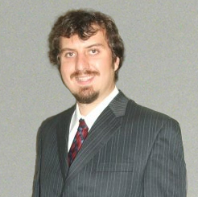
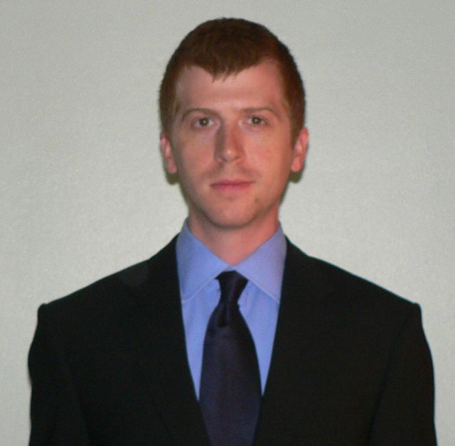

Hunter Davis
Co-founder, CEO
A well-known personality in the field of information technology, Hunter first rose to international attention in 2003 with the release of his popular RSS creation suite, one of the first of its kind. Later in 2004, his Title Bar Scroller software became a major hit in Japan with both softwares featured in major international magazines. Throughout the years, Hunter has continued to be a focus of national attention with his highly visible contributions to the fields of reverse engineering, hacking, and Linux porting and has been featured as front page news on major websites such as engadget, Wired, hackaday, and many others. Hunter is an industry veteran with over 10 years industry experience in the fields of simulation, computer graphics, computer vision, scientific computing, networking, and has trained and led teams of cross-corporate and military IT professionals for numerous corporate and DOD/DOE customers across the country. An experienced leader who is comfortable in the international spotlight or in situations of non-disclosure, Hunter co-founded Discursive Labs, LLC with Mark Christensen and became CEO in 2010. Hunter has a Masters Degree in Computer Science from Indiana University and is published in the field of Scientific Computing.

Mark Christensen
Co-founder, Product Development Lead
An experienced innovator, Mark has received acclaim for his work across many disciplines during his seven years of industry experience. With experience in theoretical research, image analysis, large-scale simulation, federated systems, user interface design, quality assurance, education, and training, Mark has the breadth of experience necessary to provide novel solutions to even the most difficult challenges. During his time as a technology consultant, Mark honed his business skills through his work with several Fortune 500 companies and with more than a dozen small and medium businesses in a variety of industries. Mark co-founded Discursive Labs, LLC with Hunter Davis and currently leads product development. Mark has a Masters Degree in Computer Science from Indiana University.